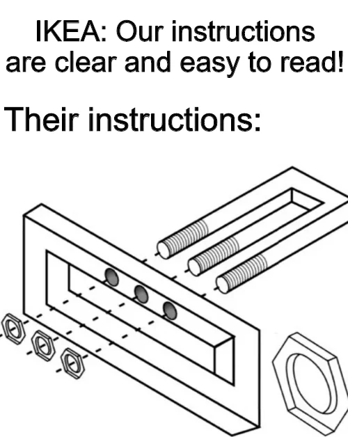
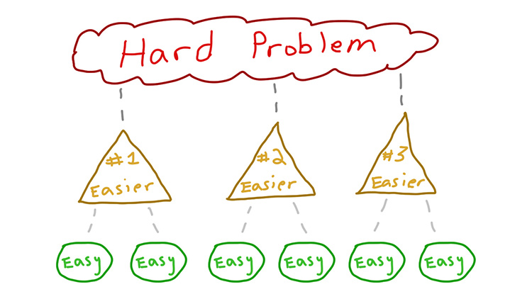

The Art of Problem Solving
Breaking Down Complex Challenges
PHP Melb Meetup
I promise this won't be as painful as debugging CSS
About Me
- Señor Software Engineer at Five9
- Ex Mr.Fixit at Aussie Broadband
- 10+ years of cursing at terrible code, only to find my name in the git blame
- Casual sim racer who applies racing lines to grocery store aisles
- Professional caffeine-to-code converter with occasional side effects
I've created enough bugs to know how to solve them
A Better Way
1
Visualize the end goal ✓
2
Work backwards ←
3
Break it down ⊟

No, this isn't how to make a sandwich, though that would be a more delicious presentation
Step 1 - Visualize the End Goal

Starting without a clear vision is like building IKEA furniture without the final picture
- What problem are we really solving?
- What does success actually look like?
- Who benefits and how?
"If you don't know where you're going, any road will get you there."
Real Example - Visualizing the Goal
Warehouse Dispatch System at Aussie Broadband
Developer Experience Hell:
- Hardcoded products requiring full deployment cycles
- No testing possible - unit, feature, or local
- 1+ hour CI pipeline for any change
- Session-based spaghetti code with extreme cognitive load
- Key personnel risk - "you touch it, you own it"
Business Impact:
- New products needed developer involvement
- Warehouse operations stalling on edge cases
- Ineffective order prioritization
- Hardware-locked dispatch kiosks
- Complex location expansion process
It was like playing Jenga with a production system
The Vision
Breaking Free from Legacy Constraints
Technical Goals:
- Configuration-driven product management
- Comprehensive testing suite
- Independent service deployments
- Clean, modular architecture
Business Outcomes:
- Self-service product management
- Graceful failure handling
- Smart order prioritization
- Browser-based dispatch system
- Easy warehouse expansion
"Instead of just 'making it work with PHP 8', we saw an opportunity to transform warehouse operations."
Our first attempt looked more like a Rube Goldberg machine, but at least it had tests!
Step 2 - Work Backwards
Find your starting point
- Identify critical requirements
- Map dependencies
- Find the shortest path from end to start
"Begin with the end in mind, then figure out how to get there."
GPS manufacturers missed their chance with the "figure out where you're going first" button
Real Example - Working Backwards
Dispatch System Dependencies
Critical Path:
- Job creation/validation
- Warehouse & device assignment
- Shipping label generation
- Carrier integration
Dependencies:
- Shipping Carrier Interface
- Inventory Service
- Printing Service
- Webhook notifications
Key insight: We needed a strategy pattern for shipping carriers
Created ShippingCarrierManager to abstract AusPost vs StarTrack implementations
"By starting with the end-to-end dispatch process and working backwards, we identified the key integration points we needed to solve first."
Step 3 - Break It Down
Create achievable components
- Divide by function
- Create logical groupings
- Keep components manageable (1-2 day tasks)
"The best way to eat an elephant is one bite at a time."

This is basically how I approach eating a burrito bowl too
Breaking Down the Dispatch System
Breaking down the monolith allowed us to:
- Isolate failures to prevent queue stalls
- Implement order prioritization
- Create a device-agnostic solution
- Add new warehouses via simple DB updates
Putting It All Together
1
Clear vision: End-to-end warehouse dispatch system
2
Work backwards: Identify critical services & interfaces
3
Break it down: SOLID services with clear responsibilities

Yes, I know this looks suspiciously like "draw the rest of the owl" but I promise it works
Why This Works
Team Benefits:
- Clearer communication
- More accurate estimates
- Easier delegation
- Start with small, achievable goals
Technical Benefits:
- Faster identification of roadblocks
- Higher quality solutions
- More maintainable code
- Testable components
For our dispatch system, this approach gave us:
- Specialized controllers for each aspect (Jobs, Devices, BoxSizes)
- Clean model relationships with clear responsibilities
- Modular services that could be independently tested
- Clear interfaces between components
"Our dispatch system achieved clean separation of concerns with services that follow SOLID principles."
Thank You!
Questions?
Questions are like bugs - better to find them now than later in production
Source Code
Connect on LinkedIn
PHP Australia Slack